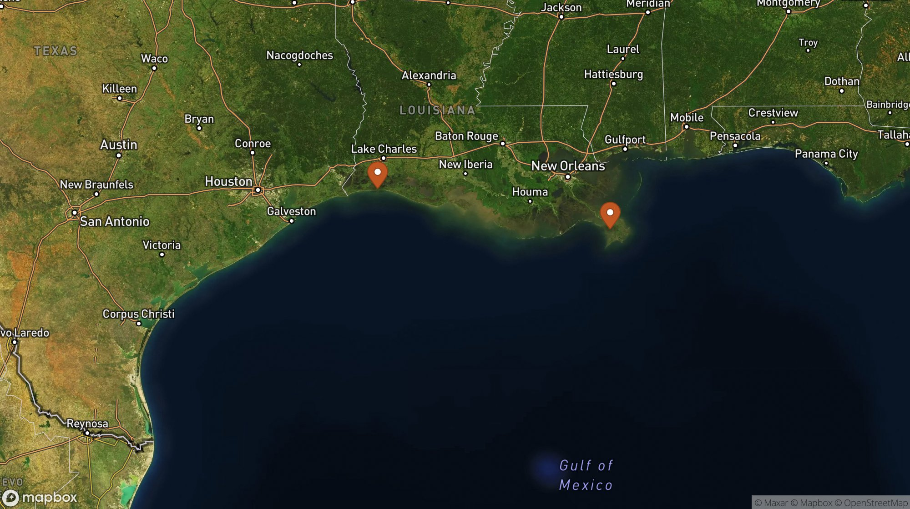

Daily severe-weather intelligence for LNG, refining, and terminal operators on the U.S. Gulf Coast.

Today's focus corridor: Calcasieu Pass and Plaquemines LNG terminals (marked). Map: Mapbox satellite-streets. Interactive radar + hurricane tracker: accuweather.taborlin.co (temporarily offline for maintenance at capture time).
| System | Status | Energy-asset impact |
|---|---|---|
| Gulf of Mexico / Atlantic | QUIET | None — no tropical formation expected next 7 days (NHC); but afternoon/evening t-storm cells 40–54% PoP along the Louisiana terminal corridor today |
| TS Norbert (E Pacific) | MONITOR | 685 mi SSW of Baja, tracking WNW — no threat to the Costa Azul LNG coast; marine warnings for E Pacific shipping lanes |
| TS Lowell (Central Pacific) | MOVING AWAY | Well NW of Hawaii, away from infrastructure and shipping |
| EP disturbance (SW of Mexico) | 70% / 7d | Tropical depression likely early next week, moving WNW over open East Pacific — away from Baja terminals; worth one check Monday |
| Gulf heat — Middle East | ACTIVE | 103 °F today at Ras Laffan, building to ~113 °F (45 °C) this weekend — outdoor-work windows and turbine derating at Gulf LNG complexes |
Same hour, same coordinates (Plaquemines LNG, Mississippi River corridor), two very different answers:
Afternoon t-storm cells 43–51% through 5 PM while free APIs show 13–33% and no storm flag. Sep 1 Edouard surge context included.
Full asset brief →103 °F now, ~113 °F this weekend; free APIs underread the same coordinates 3–6 °F at heat-rule hours. Hour-specific outdoor-work windows inside.
Full asset brief →